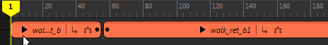
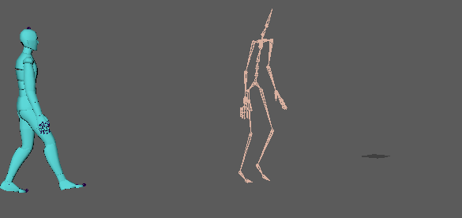
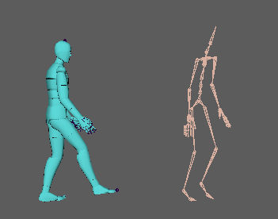
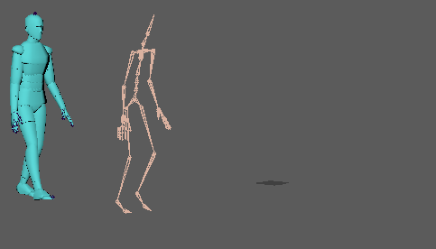

时间编辑器
“匹配重定位器”(Match Relocator)选项允许根据指定的对象对齐片段，因此您可以将它们合并在一起以创建新动画。
注： 如果多个根驱动动画片段（例如，如果装备没有明确层次，但具有用于整个角色的控制器），则可以选择片段，然后随时单击
“编辑重定位器”(Edit Relocator)以在
重定位器选项中将其他根设为重定位器。
- 为相同轨迹上的相同角色添加两个动画片段。

- 修剪片段以加快匹配过程。例如，在两个片段中找到一个帧，其中角色的左脚平放在地面上。如果第一个片段的结尾与第二个片段的开始类似，则匹配更平滑且所需的调整更少。

提示： 在匹配点将两个片段融合在一起，以大致了解最终结果的外观。
- 在第一个片段上单击鼠标右键，然后选择。此时将显示“匹配选项”(Matching options)。
- 接下来，在“大纲视图”(Outliner)中，从要成为匹配对象的第一个动画片段中选择角色身体部位（如左踝），然后单击“选择”(Select)。
“时间编辑器”(Time Editor)使用此对象作为匹配参考点。
注： 如果选择身体部位，请在“匹配对象”(Matching Objects)区域中禁用“根对象”(Root Objects)。
- 从“匹配片段”(Matching Clip)选项中选择“下一个”(Next)或“上一个”(Previous)，使选定对象与下一/上一片段匹配。
- 从“匹配时间”(Matching Time)选项中选择要匹配片段的过渡时间。
- 选择“匹配姿势”(Matching Pose)。有关“匹配姿势”(Matching Pose)选项的描述，请参见匹配选项。
- 单击“匹配”(Match)。

两个片段接合在一起。
